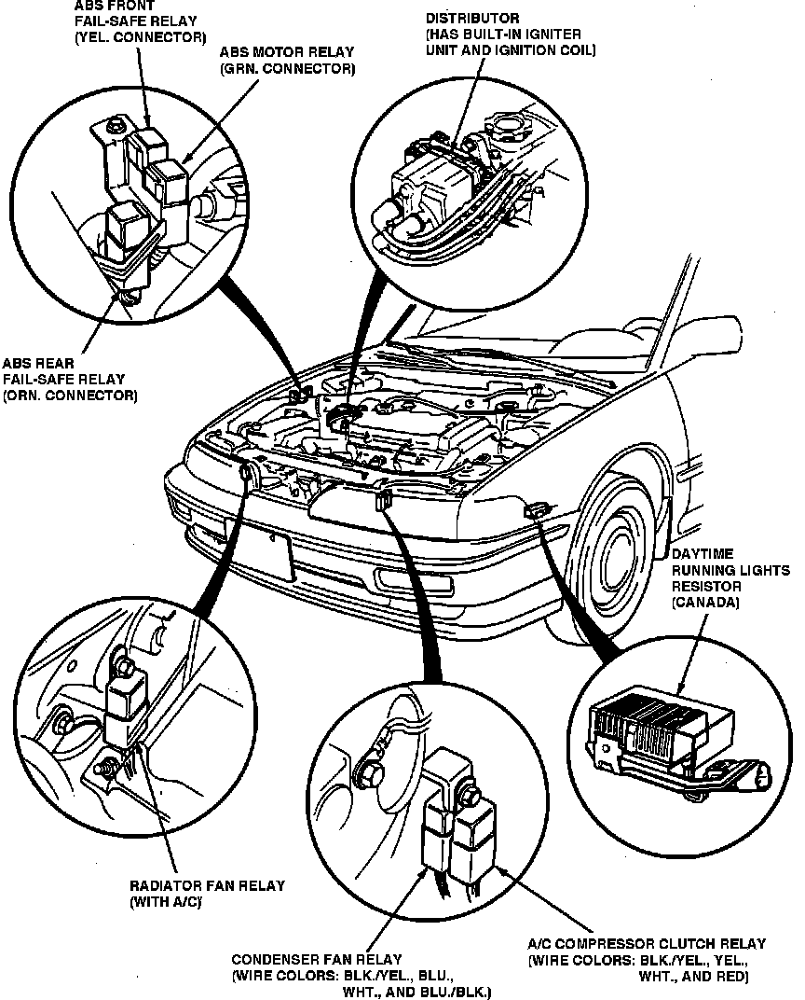
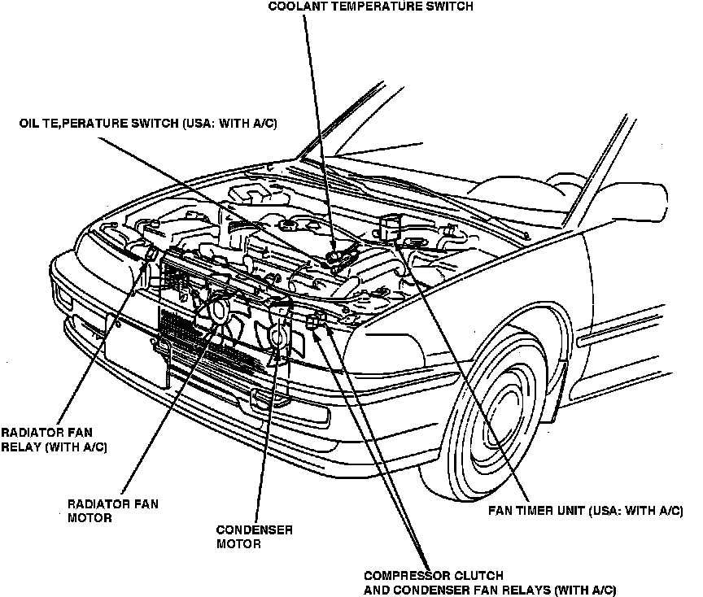

Operation CHARM
: Car repair manuals for everyone.
Home
>>
Acura
>>
1991
>>
Integra L4-1834cc 1.8L DOHC FI
>>
Repair and Diagnosis
>>
Engine, Cooling and Exhaust
>>
Cooling System
>>
Relays and Modules - Cooling System
>>
Radiator Cooling Fan Motor Relay
>>
Locations
Radiator Cooling Fan Motor Relay: Locations
Anti-Lock Brake System (ABS) Components:

Radiator & Condenser Fan Components:

Front RH Side Of Engine Compartment